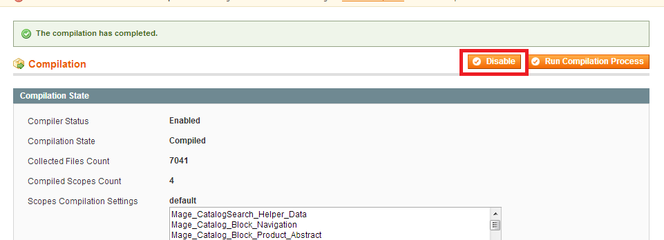
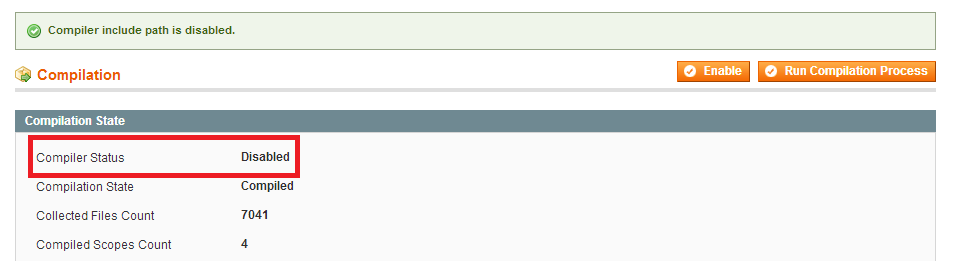
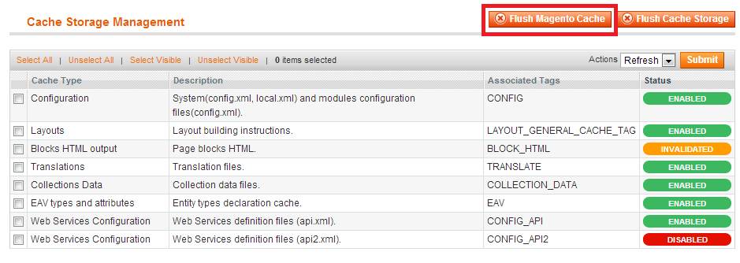
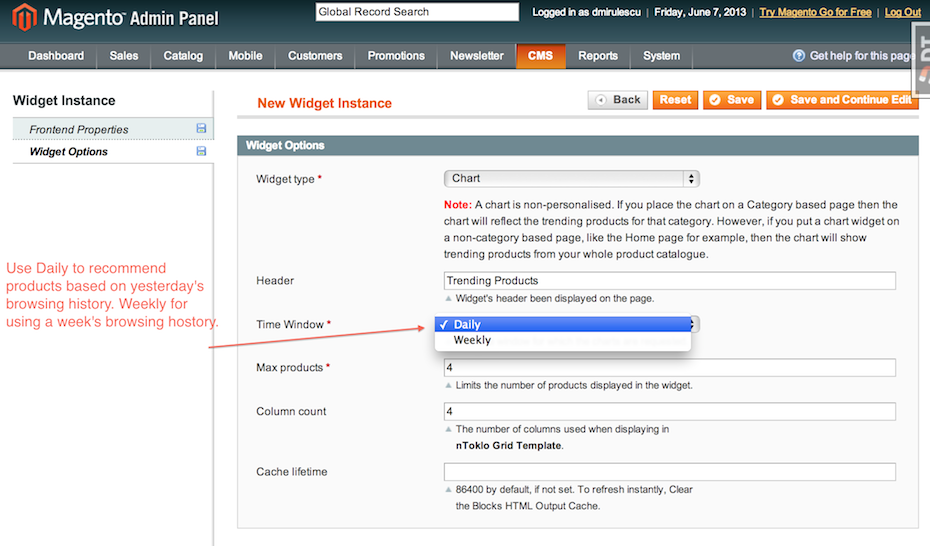

London, W1B 5NL, United Kingdom
T: +44 (0) 20 7747 1080
F: +44 (0) 20 7747 1010
Email: support@ntoklo.com
nToklo Recommendations
Table of Contents
Description
Version 0.1.0Magento Connect extension page: http://www.magentocommerce.com/magento-connect/ntoklo-recommendations.html
Displays personalised product recommendations and trending product charts through integration with nToklo for retail platform.
Features
- Seamlessly Integrates with nToklo for retail recommendations API’s.
- Uses the Open Data Alliance Universal Variable - Generats UniversalVariable JSON object and submits it to nToklo for processing to leverage user behaviour.
- Utilises native Magento widgets to render personalised product recommendations and trending product charts through nToklo API’s.
- Integrates with your store CMS to account for product categories.
Installation
Backup your data
Backup the database and your store's web directory.
Disable Compilation
This step is for Magento 1.4+ versions. If you are running an older version, this step can be skipped. In the Magento admin panel, go to System->Tools->Compilation. In case "Compiler Status" is "Enabled", click on the "Disable" button (in case the status is disabled you can skip this step):
This screen should now look like this:
Download and Extract
Download and extract (unzip) the extension's contents on you computer. Navigate inside the extracted folder.
Upload files
Using a FTP client, upload the content of the extension directory to the store's document root, so that the app directory in the extension folder overwrites the app directory on the server. If asked to replace any files, select "Yes".
Clear the cache
In the Magento admin panel, go to System -> Cache Management and press the "Flush Magento Cache" button:
Configuration
You will need an nToklo account.
After successfully installing the extension, go to http://console.ntoklo.com/register and register an account if you don’t already have one. From within your console, create an application using your store domain name.
When entering the domain of your application, do not put the http:// or trailing path. For example, if your store url is http://mydomain.com/store. Simply enter the domain mydomain.com
Navigate to Admin -> System -> Configuration -> nToklo.
- Enabled - Turn this on to send the UniversalVariable object to nToklo and also allow widgets to display on pages.
- Api Key - The API key of the application you registered in your nToklo console (http://console.ntoklo.com)
- Api Secret - This can be found along with the API Key in the nToklo console for your application. (http://console.ntoklo.com)
Widgets
Displaying the product recommendations or trending product chart requires you to configure nToklo widgets on the pages you select.
Navigate to Admin -> CMS -> Widgets and choose "Add New Widget Instance".
Select Type nToklo.
Under "Frontend Properties" choose the appropriate store and theme. Under Layout Updates define the pages/regions where you need your widgets to be placed
Choosing Template under Layout Updates:
- nToklo Column Template - use it to place the widget under left / right column regions.
- nToklo Grid Template - use it to place the widget wider spaces like Main Content Area.
Widget Options
Here you can chose what type of widget you would like and how it should behave.
Options:
- Widget type:
- Recommendations - Select this option to present personalized product recommendations in the widget. Where the user is anonymous the best option recommendations will be served. Where available, item context like the product category is used. So recommendations on product / category pages will be scoped appropriately.
- Trending product chart - this widget type is non-personalized as it provides a billboard type chart of products. Items in the widget are numbered numerically. Where available, item context like the product category is used. So charts on product / category pages will be scoped appropriately. You may select a daily or weekly chart.
- Header: - the widget title.
- Time Window: - option only available for "Charts". The option specifies whether to show a daily, i.e. the trending products from yesterday, or, weekly chart, i.e. the trending products from last week. A week is taken as the last 7 days, i.e. it’s a rolling week.
- Max Products: - The maximum number of products to show in the widget.
- Column count: - this defines the number of columns to be displayed when using the "nToklo Grid Template" in the Widget Properties tab.
- Cache lifetime: - allows you to define the refresh interval. 86400 is the default Magento cache lifetime.